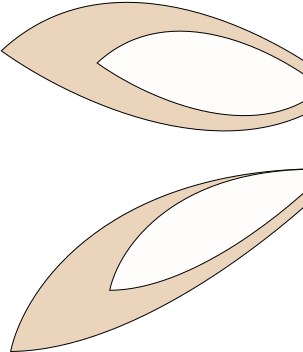

Bunny
- Bunnies can live for 10-12 years, which is pretty long for a little pet!
- They are most playful in the mornings and the evenings - perfect for your work or school schedule!
- They are amazing companions! Bunnies can learn tricks, play games, are cuddly, and have fun personalities.